- process_data: True
- x_weight: 0.1
- u_weight: 10
- discount_factor: 1.0
- lookahead: 3
- state_latent_dim: 100
- control_latent_dim: 10
- state_encoder_kwargs:
- num_layers: 10
- layer_scale: 1
- std_activation: elu
- state_decoder_kwargs:
- num_layers: 10
- layer_scale: 1
- std_activation: elu
- control_encoder_kwargs:
- num_layers: 10
- layer_scale: 1
- std_activation: elu
- control_decoder_kwargs:
- num_layers: 10
- layer_scale: 1
- std_activation: elu
- actuator_names: ['pinj', 'curr', 'tinj', 'gasA']
- profile_names: ['temp', 'dens', 'ffprime_EFIT02', 'press_EFIT02', 'q_EFIT02']
- scalar_names: []
- profile_downsample: 2
- state_encoder_type: dense
- state_decoder_type: dense
- control_encoder_type: dense
- control_decoder_type: dense
- batch_size: 128
- epochs: 200
- flattop_only: True
- raw_data_path: /scratch/gpfs/jabbate/mixed_data/final_data.pkl
- processed_filename_base: /scratch/gpfs/jabbate/data_60_ms_randomized_
- optimizer: adagrad
- optimizer_kwargs:
- shuffle_generators: True
- pruning_functions: ['remove_nan', 'remove_dudtrip', 'remove_I_coil']
- normalization_method: RobustScaler
- window_length: 3
- window_overlap: 0
- lookback: 0
- sample_step: 1
- uniform_normalization: True
- train_frac: 0.8
- val_frac: 0.2
- nshots: 12000
- excluded_shots: ['topology_TOP', 'topology_OUT', 'topology_MAR', 'topology_IN', 'topology_DN', 'topology_BOT']
- sig_names: ['temp', 'dens', 'ffprime_EFIT02', 'press_EFIT02', 'q_EFIT02', 'pinj', 'curr', 'tinj', 'gasA']
- dt: 0.06
- profile_length: 33
- runname: model-autoencoder_SET-dense_SDT-dense_CET-dense_CDT-dense_profiles-temp-dens-ffprime_EFIT02-press_EFIT02-q_EFIT02_act-pinj-curr-tinj-gasA_LB-0_LA-3_ftop-True_01Dec19-13-25_Scenario-103
- steps_per_epoch: 997
- val_steps: 249
- model_path: /home/wconlin/run_results_11_19/model-autoencoder_SET-dense_SDT-dense_CET-dense_CDT-dense_profiles-temp-dens-ffprime_EFIT02-press_EFIT02-q_EFIT02_act-pinj-curr-tinj-gasA_LB-0_LA-3_ftop-True_01Dec19-13-25_Scenario-103.h5
image_path
sheet_path
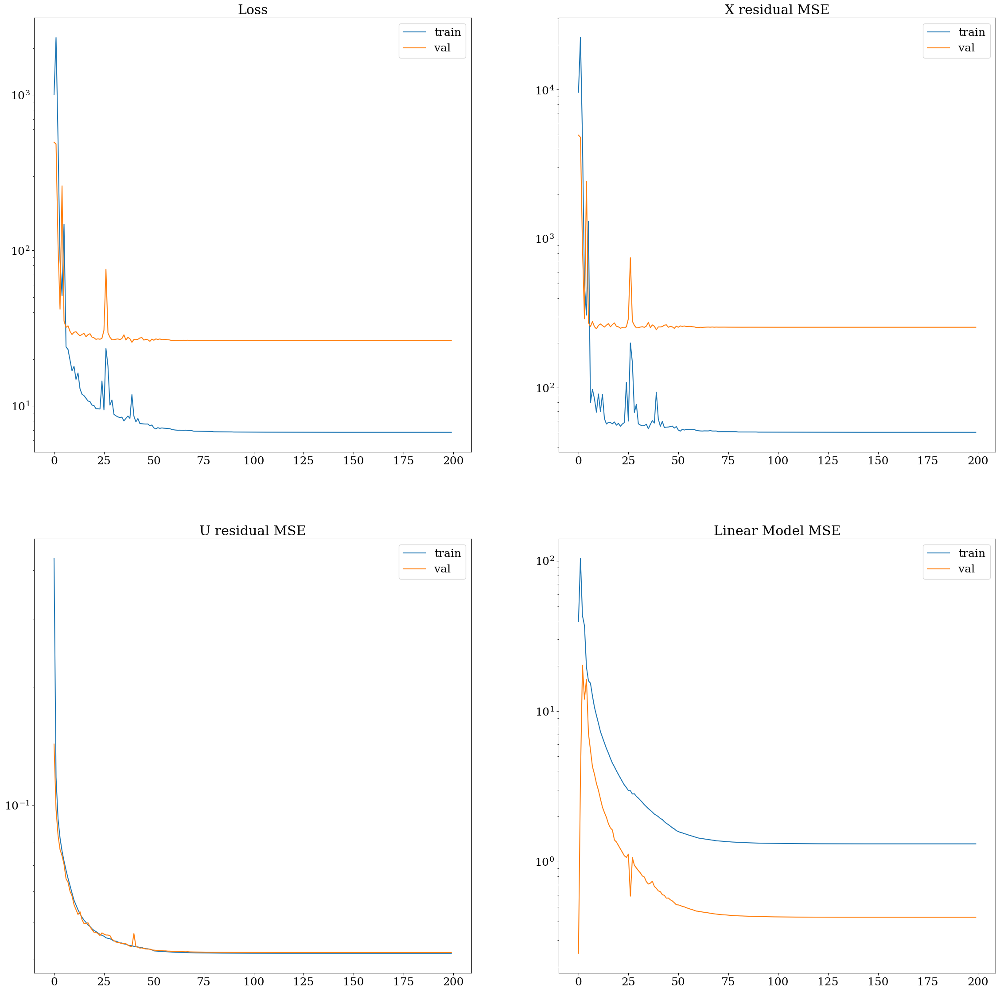
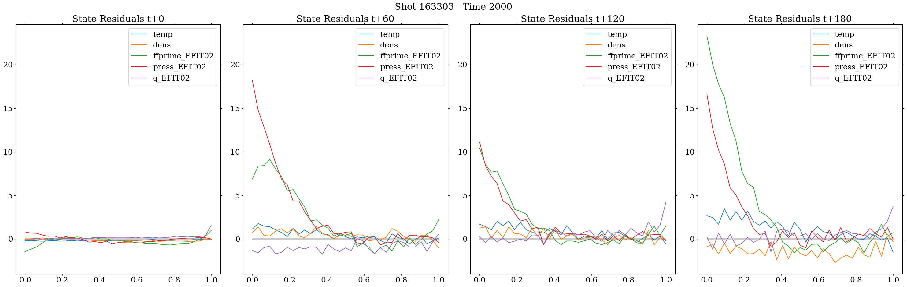
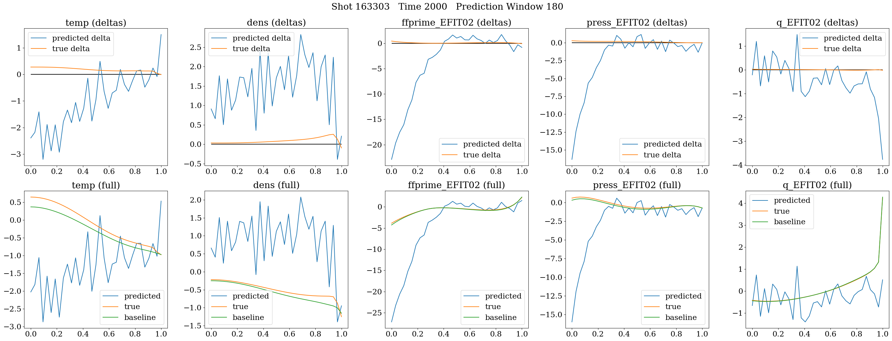
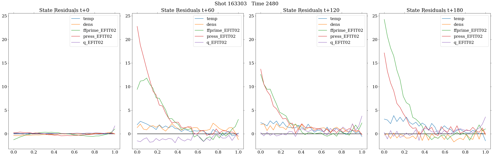
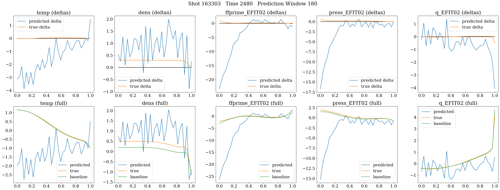
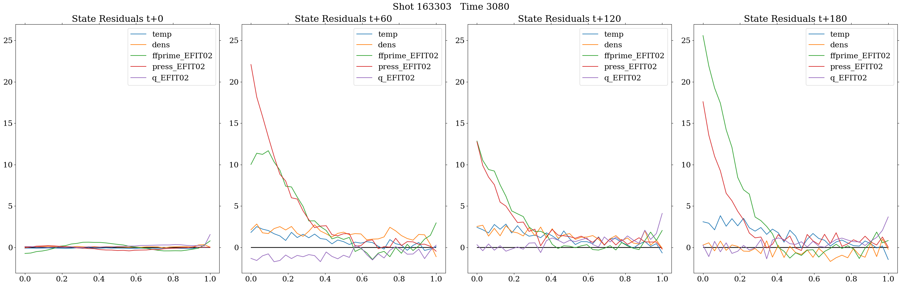
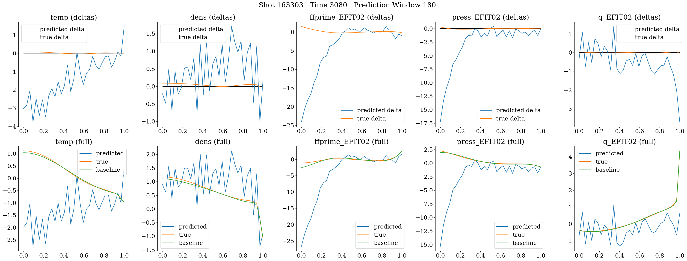
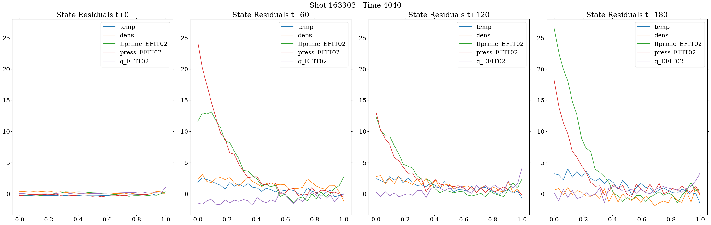
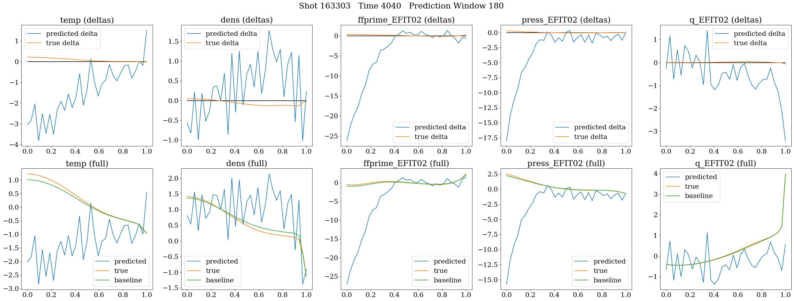
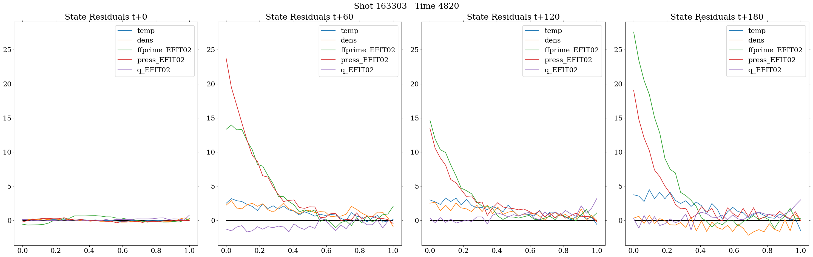
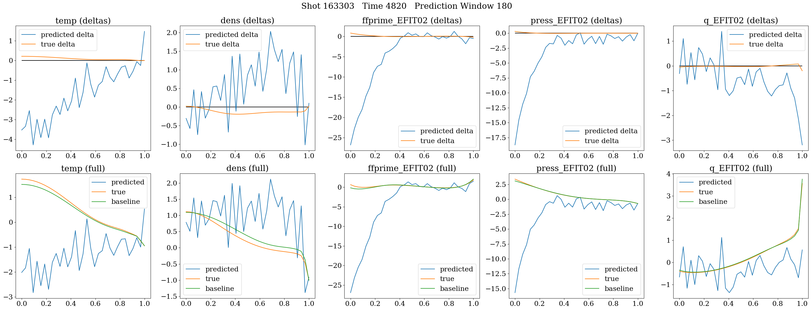
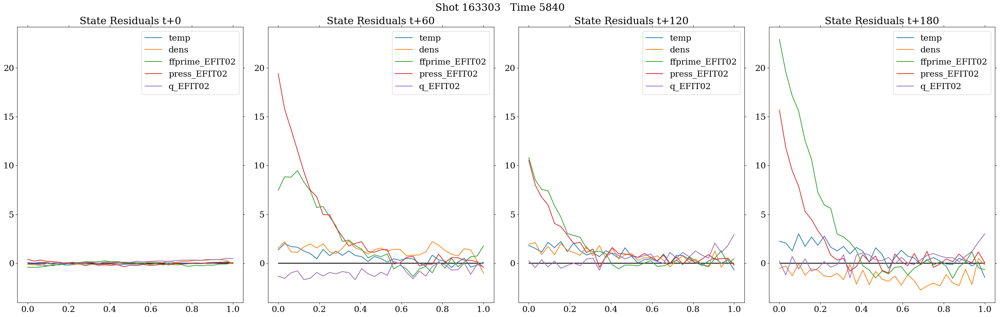
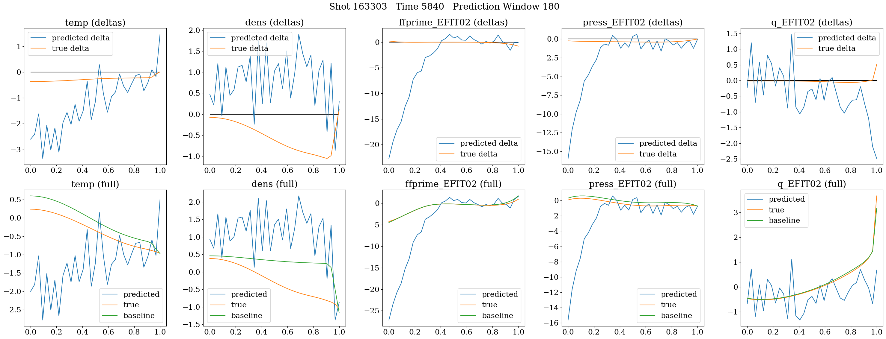
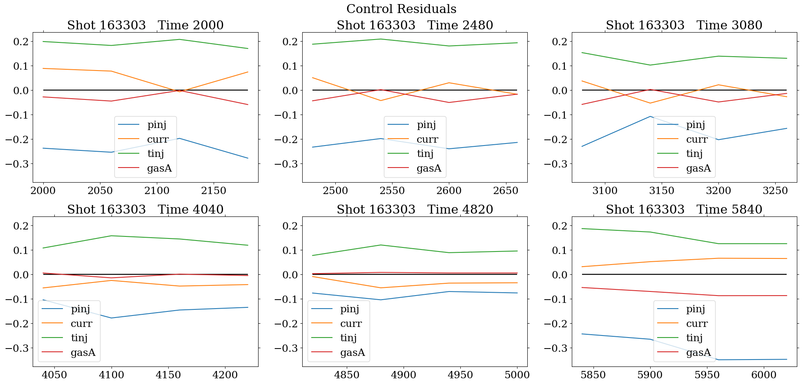
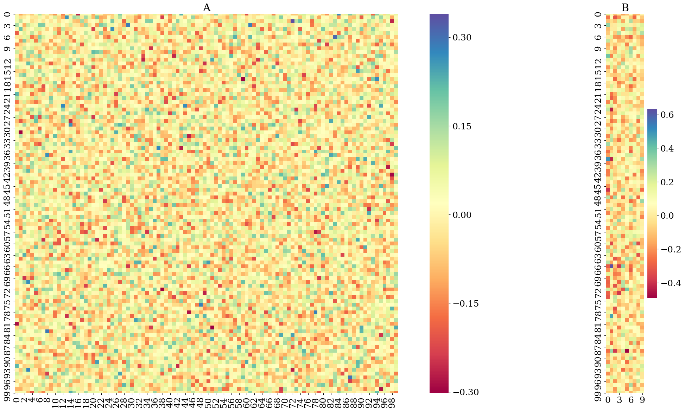
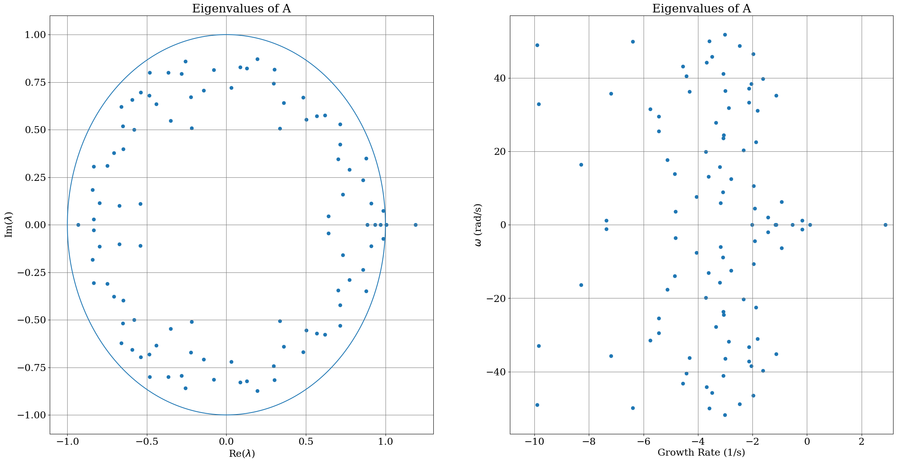